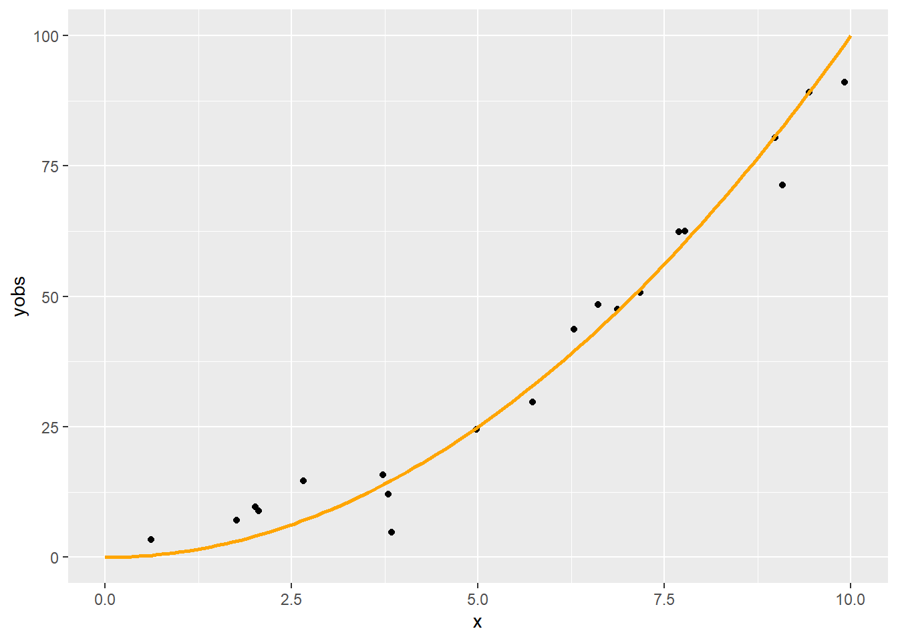
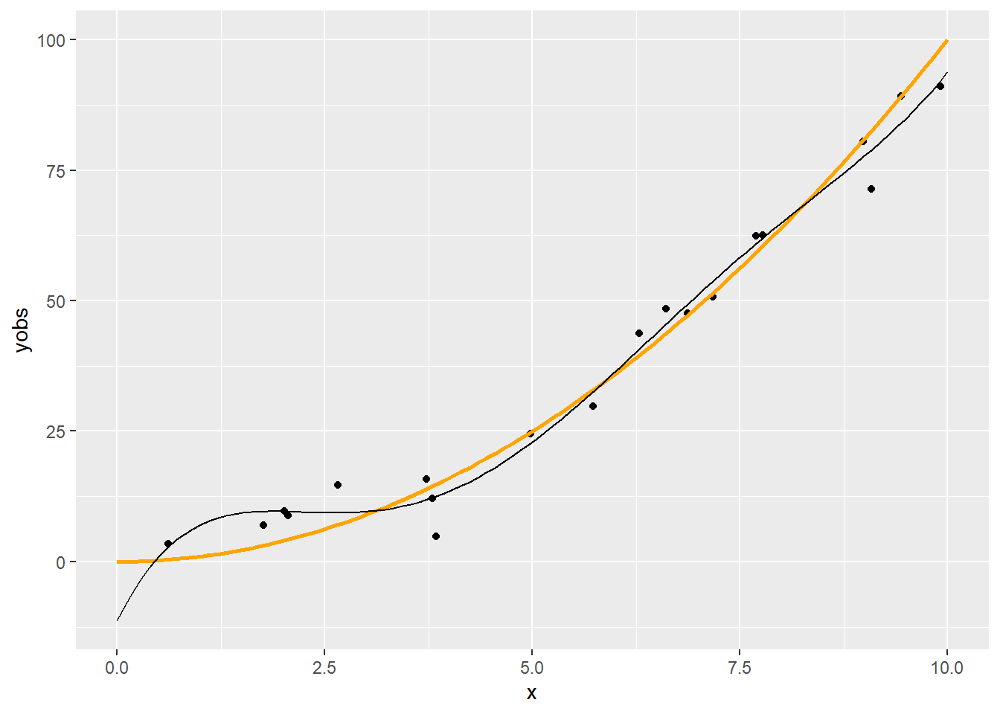
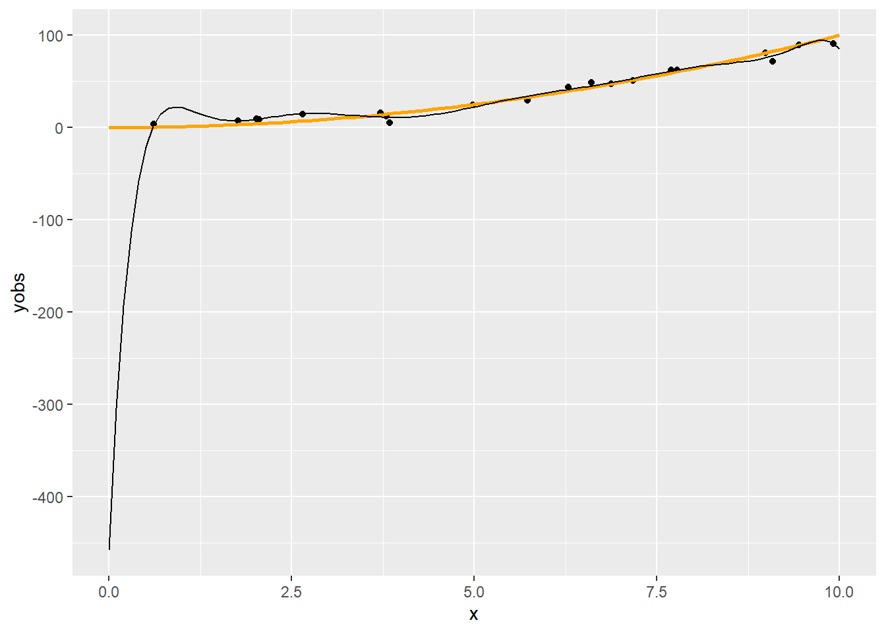
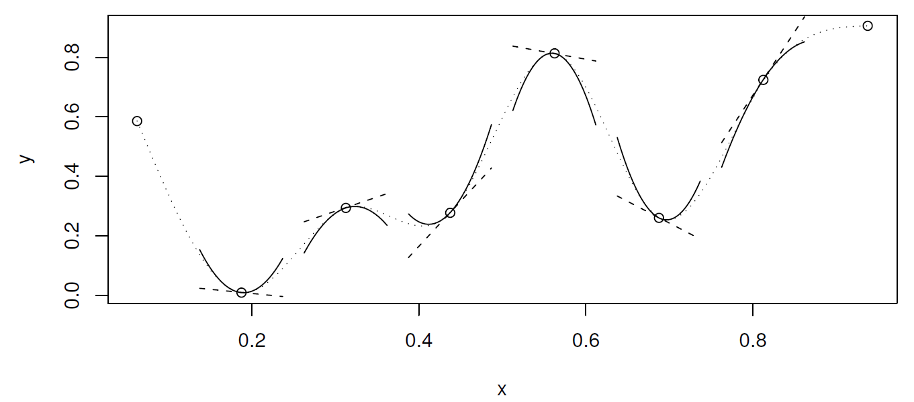

(\(Y\) eredményváltozó, \(X_i\)-k a magyarázó változók)
2.2 Regresszió becslése mintából
Paraméteres regresszió: ha a priori feltételezzük, hogy az \(f\) függvény valamilyen – paraméterek erejéig meghatározott – függvényformájú (az „alakja” ismert), és így a feladat e paraméterek becslésére redukálódik
Tipikus példa a lineáris regresszió: \(f\left(\mathbf{X}\right)=\beta_0+\beta_1 X_1 + \beta_2 X_2 + \ldots + \beta_p X_p=\mathbf{X}^T\pmb{\beta}\), így \(Y=\mathbf{X}^T\pmb{\beta}+\varepsilon\)
Ha rendelkezésre állnak az \(\left\{y_i,\mathbf{x}_i\right\}_{i=1}^n\) megfigyeléseink a háttéreloszlásra, akkor e mintából megbecsülhetjük a paramétereket például hagyományos legkisebb négyzetek (OLS) módszerével:
Itt tehát \(\mathbf{X}\) az a mátrix, amiben a magyarázó változók elé egy csupa 1 oszlopot szúrtunk, a neve modellmátrix vagy design mátrix
2.3 Paraméteres és nem-paraméteres regresszió
De cserében mindig ott lebeg felettünk a kérdés, hogy a függvényformára jó feltételezést tettünk-e (hiszen ez nem az adatokból következik, ezt „ráerőszakoljuk” az adatokra)
(Persze ezért van a modelldiagnosztika)
A nem-paraméteres regresszió flexibilis, olyan értelemben, hogy minden a priori megkötés nélkül követi azt, ami az adatokból következik (a valóság ritkán lineáris?)
Cserében nehezebb becsülni, és nem kapunk analitikus – jó esetben valamire hasznosítható – regressziós függvényt, nem lehet értelmesen interpolálni és extrapolálni („fordul a kocka” a paraméteres esethez képest)
2.4 A lineáris regresszió kibővítése, nemlinearitások
Maradva a paraméteres keretben, arra azért mód van, hogy a függvényformát kibővítsük (és így flexibilisebbé tegyük)
Ezzel a különféle nemlineáris regressziókhoz jutunk el
E nemlinearitásoknak két alaptípusa van
Változójában nemlineáris modell (pl. \(\beta_0 + \beta_1 x + \beta_2 x^2\)): csak a szó „matematikai értelmében” nemlineáris, ugyanúgy becsülhető OLS-sel
Paraméterében nemlineáris modell (pl. \(\beta_0x_1^{\beta_1}x_2^{\beta_2}\)): felrúgja a lineáris struktúrát, így érdemileg más, csak linearizálás után, vagy NLS-sel becsülhető
Mi most az első esettel fogunk foglalkozni
Az itt látott „polinomiális regresszió” valóban nagyon gyakori módszer a flexibilitás növelésére
2.5 Egy példa
Tekintsünk most egy másik példát, egy zajos másodfokú függvényt, kevesebb pontból:
n <-20x <-runif(n, 0, 10)xgrid <-seq(0, 10, length.out =100)ygrid <- xgrid^2yobs <- x^2+rnorm(n, 0, 5)SimData <-data.frame(x, xgrid, ygrid, yobs)p <-ggplot(SimData) +geom_point(aes(x = x, y = yobs)) +geom_line(aes(x = xgrid, y = ygrid), color ="orange", lwd =1)p

2.6 Regresszió ötödfokú polinommal
fit5 <-lm(yobs ~poly(x, 5), data = SimData)p +geom_line(data =data.frame(xgrid, pred =predict(fit5, data.frame(x = xgrid))),aes(x = xgrid, y = pred))

2.7 Módosítás
Mondjuk, hogy nagyobb flexibilitásra vágyunk
Például figyelembe akarjuk venni, hogy ez nem tűnik teljesen lineárisnak, vagy meg akarjuk ragadni a finomabb tendenciákat is
Emeljük a polinom fokszámát (ez nyilván növeli a flexibilitást, hiszen a kisebb fokszám nyilván speciális eset lesz), például 10-re
Szokás azt mondani, hogy a rang 5 illetve 10 (a polinom fokszáma, a becsülendő paraméterek száma nyilván egyezik a modellmátrix rangjával, de ez a fogalom később, amikor nem is polinomunk van, akkor is használható)
2.8 Regresszió tizedfokú polinommal
fit10 <-lm(yobs ~poly(x, 10), data = SimData)p +geom_line(data =data.frame(xgrid, pred =predict(fit10, data.frame(x = xgrid))),aes(x = xgrid, y = pred))

2.9 Mi a jelenség oka?
Szokás azt mondani, hogy túlilleszkedés, ami persze igaz is, de itt többről van szó
A polinomok elsősorban lokálisan tudnak jól közelíteni (a Taylor-sorfejtéses érvelés miatt), de nekünk arra lenne szükségünk, hogy globálisan jól viselkedő függvényformát találjunk
Pedig a polinomokat amúgy szeretjük, többek között azért is, mert szép sima görbét írnak le (matematikai értelemben véve a simaságot: végtelenszer folytonosan deriválhatóak, \(C^{\infty}\)-beliek)
Mi lehet akkor a megoldás?
2.10 Mi lehet a megoldás?
Egy lehetséges megközelítés: „összerakjuk a globálisat több lokálisból”
Azaz szakaszokra bontjuk a teljes intervallumot, és mindegyiket külön-külön polinommal igyekszünk modellezni
Így próbáljuk kombinálni a két módszer előnyeit
Persze a szakaszosan definiált polinomok önmagában még nem jók: a szakaszhatárokon találkozniuk kell (e találkozópontok neve: knot, „csomópont”, a számukat \(q-2\)-val jelöljük, a pozíciójukat \(x_i^{\ast}\)-vel)
Sőt, ha a simasági tulajdonságokat is át akarjuk vinni, akkor az érintkezési pontokban a deriváltaknak (magasabbrendűeknek is) is egyezniük kell
Ha \(p\)-edfokú polinomokat használunk, akkor az első \(p-1\) derivált – és persze a függvényérték – egyezését kell kikötnünk a knot-okban (és esetleg még valamit a végpontokra)
Ez így már jó konstrukció lesz, a neve: spline
2.11 Természetes köbös spline
(Azért köbös, mert harmadfokúak a polinomok, és azért természetes, mert azt kötöttük ki, hogy a végpontokban nulla legyen a második derivált)

Természetes köbös spline
2.12 A példa regressziója természetes köbös spline-nal
fitSpline <-lm(yobs ~ splines::ns(x, 10), data = SimData)p +geom_line(data =data.frame(xgrid, pred =predict(fitSpline, data.frame(x = xgrid))),aes(x = xgrid, y = pred))